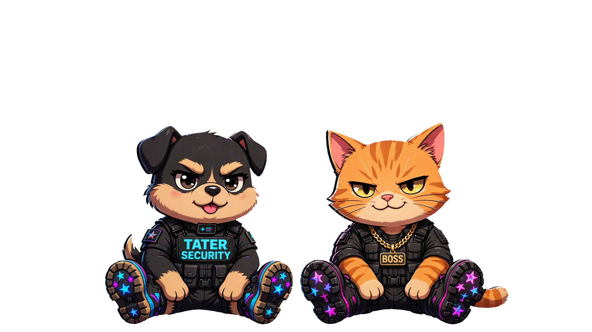
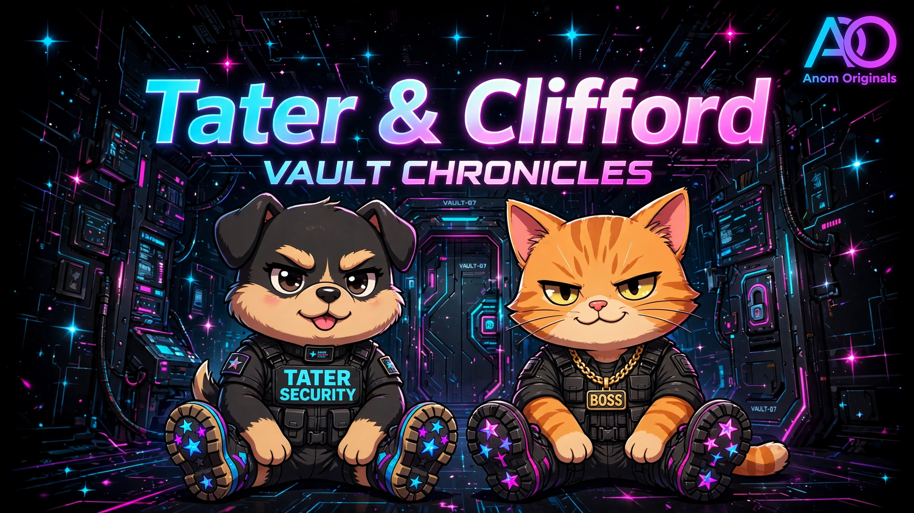

ANOM
ORIGINALS
HOME
LANES
KIDS CORNER
SHOP
Achievements • 3 Files Live
TATER &
CLIFFORD
Tater
— anxious, big-hearted chaos gremlin.
Clifford
— stoic, deadpan guardian. Vault where you log wins. Live from assets/achievements/.
Shop Their Drop
Masters

Master Transparent • Feet Visible
Vault Chronicles
Vault Chronicles

Vault Chronicles Alt